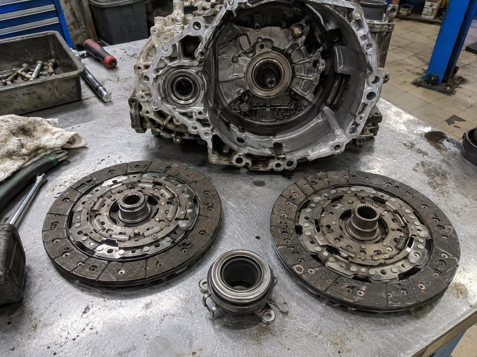
Volkswagen · Audi · Škoda · SEAT
DSG / S-Tronic
Рывки, вибрация, задержки переключений? Обсудим проверку сцепления, мехатроника и параметров вашей коробки.
Посмотреть 6 моделейКаталог DSG · S-Tronic · PowerShift
Найдите свою коробку — по семейству или индексу. Не знаете обозначение? Назовите марку, модель и год автомобиля.
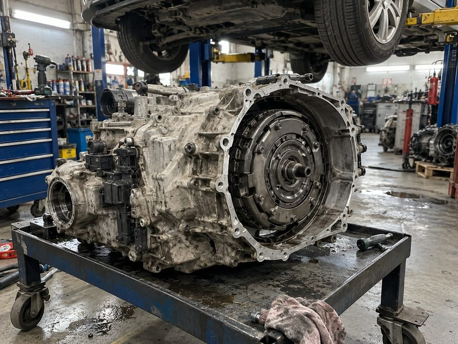
У каждого семейства свои узлы и порядок проверки. Начните с того, что установлено на вашем автомобиле.

Рывки, вибрация, задержки переключений? Обсудим проверку сцепления, мехатроника и параметров вашей коробки.
Посмотреть 6 моделей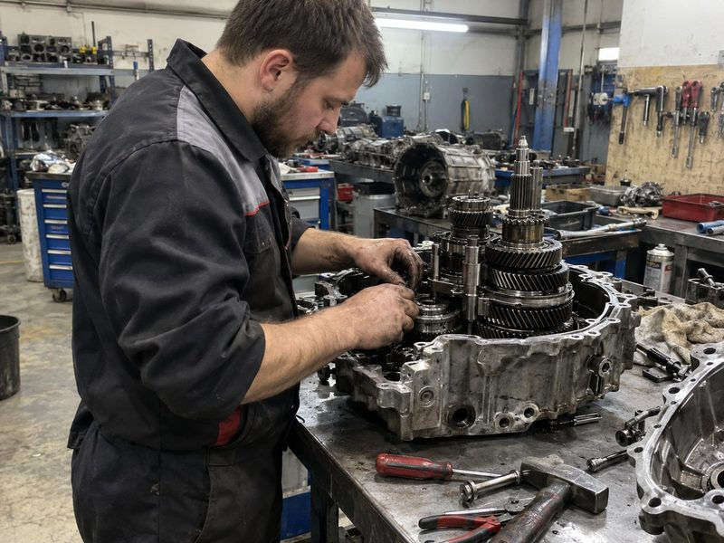
У сухого DPS6 и мокрого MPS6 разные особенности. Уточним тип агрегата и возможный порядок диагностики.
Посмотреть 2 моделиТип агрегата зависит от года, двигателя и комплектации. Точное соответствие вашему автомобилю уточним отдельно.
По марке: Точное соответствие уточним по году, двигателю и комплектации.
Показать все маркиНайдено коробок: 8
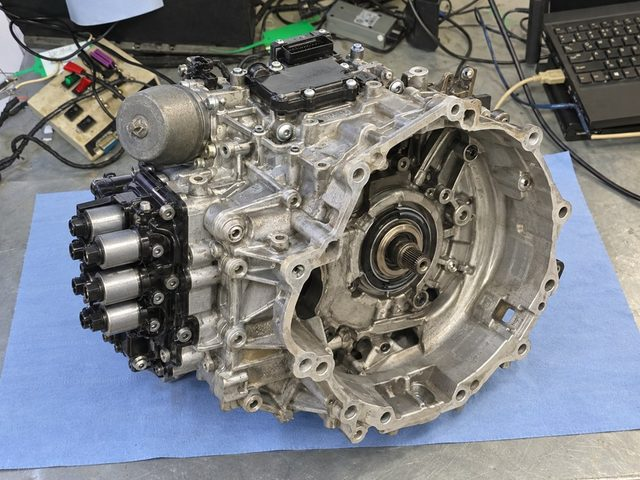
7 передач · сухое сцепление
Volkswagen · Audi · Škoda · SEAT
Сцепление, мехатроник, адаптация.
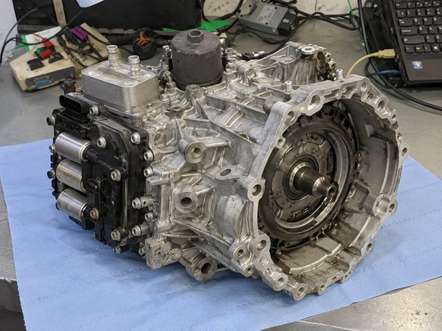
6 передач · мокрое сцепление
Volkswagen · Audi · Škoda · SEAT
Пакет сцепления, управление, обслуживание.
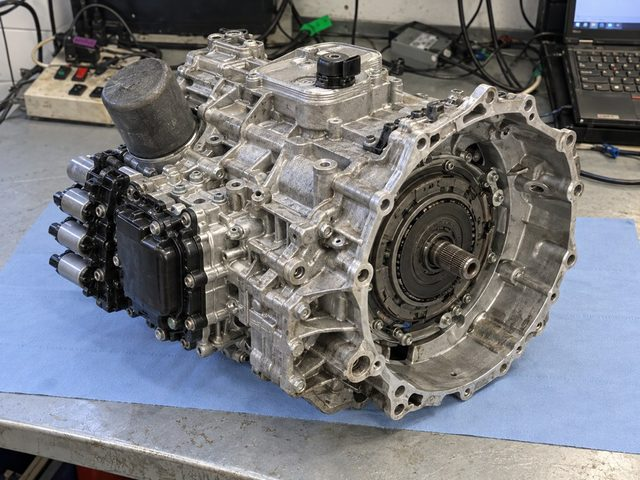
7 передач · мокрое сцепление
Volkswagen · Audi · Škoda · SEAT
Диагностика, сцепление, мехатроник.
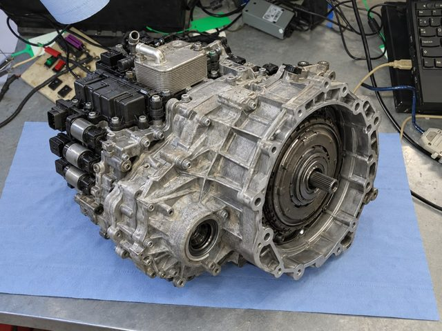
7 передач · мокрое сцепление
Volkswagen · Audi
Сцепление, гидравлика, обслуживание.
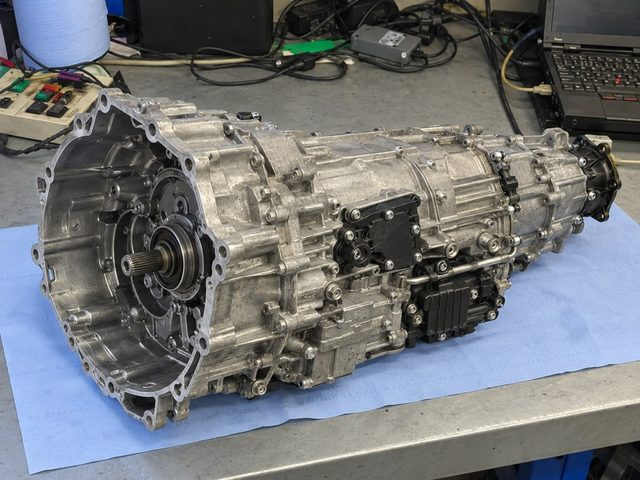
7 передач · мокрое сцепление
Audi · S-Tronic
Сцепление, мехатроник, адаптация.
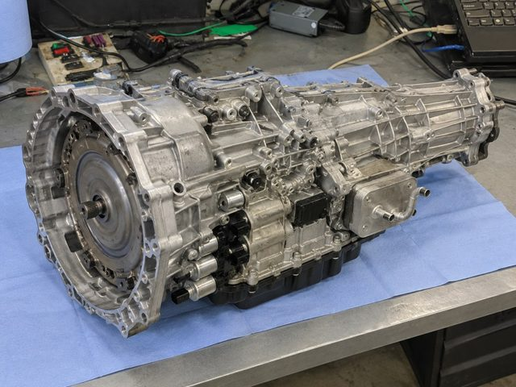
7 передач · мокрое сцепление
Audi · S-Tronic
Диагностика, управление, обслуживание.
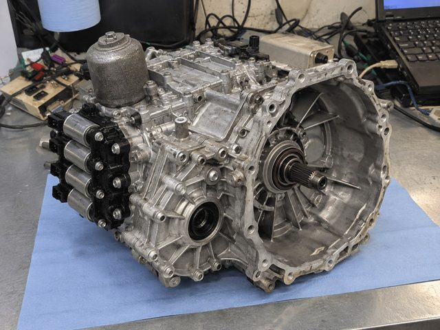
6 передач · сухое сцепление
Ford · PowerShift
Двойное сцепление, TCM, адаптация.
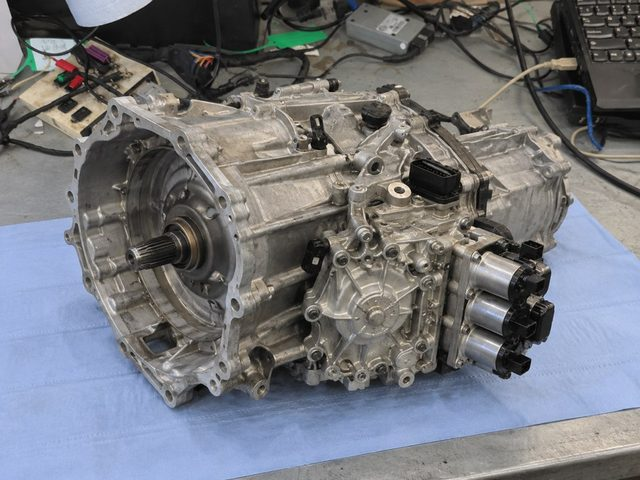
6 передач · мокрое сцепление
Ford · Volvo · PowerShift
Сцепление, демпфер, гидравлика.
Обозначения могут отличаться. Назовите автомобиль и год — мастер поможет разобраться.
Для первого разговора достаточно марки и модели.
Один симптом может иметь разные причины. Состав ремонта определяем по результатам проверки вашей коробки.
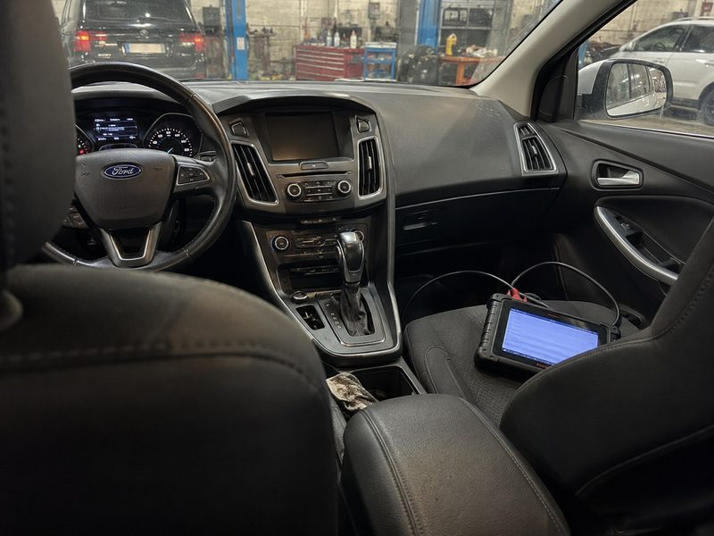
Проверка → объяснение → согласованная сметаОшибки, параметры и поведение агрегата. Диагностика DSG — бесплатно.
Проверка состояния узлов, обсуждение ремонта или замены.
Диагностика управляющей части PowerShift, согласование необходимых работ.
Масло, фильтры и настройки — с учётом конкретной модели коробки.
Ваш следующий шаг
Марка, модель, год и симптомы помогут начать разговор. Мастер уточнит детали и объяснит порядок проверки.
Не нашли свой вопрос?
Опишите ситуацию — обсудим её отдельно.
Он может быть указан в документации автомобиля, на информационной наклейке или в данных диагностики. Если обозначения нет под рукой, назовите марку, модель и год — мастер уточнит, какие данные понадобятся.
Одной марки недостаточно: тип коробки зависит от модели, года, двигателя и комплектации. Поэтому перед обсуждением конкретных работ уточняем данные автомобиля.
Это названия семейств роботизированных коробок. За ними стоят разные модели агрегатов, поэтому для диагностики и ремонта важен конкретный индекс, например DQ200 или DL501.
Бесплатная диагностика предусмотрена для DSG. Порядок и стоимость проверки PowerShift уточните у мастера перед визитом.
Начните с проверки и определения типа коробки. После диагностики мастер объяснит причину симптомов, нужные работы и состав сметы.